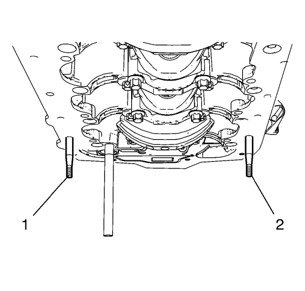
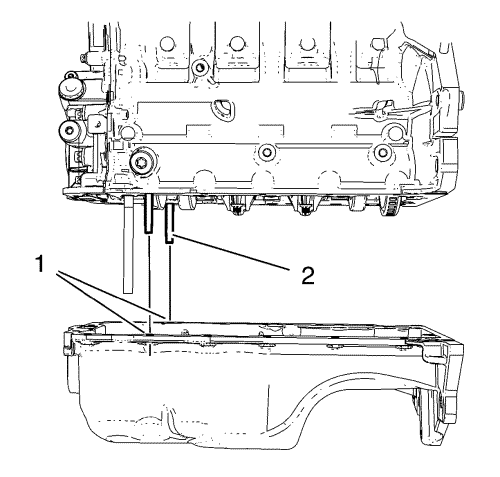
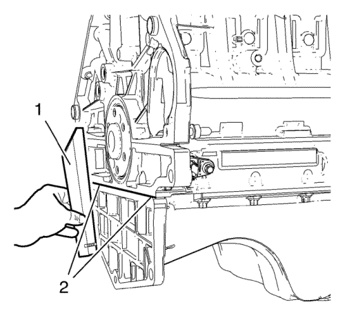

Montaje del cárter de aceite
Herramientas especiales
EN-49980 Pasadores de guía
Si desea informarse sobre herramientas regionales equivalentes, consultar Herramientas especiales .
- Limpie el material de sellado viejo, la suciedad y la grasa de las superficies de sellado.

Nota: El cordón de sellado debe aplicarse cerca del borde interior del cárter de aceite. Procure que no entre suciedad o masilla sellante en el conducto de aspiración de aceite (4). La capa de masilla sellante (3) debe tener un grosor de 2 mm (0,0787 pulg.).
- Aplique masilla sellante al cárter de aceite. Consultar Adhesivos, líquidos, lubricantes y selladores
- Aplique masilla sellante a la ranura de la cubierta delantera del motor (1). Consultar Adhesivos, líquidos, lubricantes y selladores .
- Aplique masilla sellante alrededor del orificio roscado (2) de la placa de sujeción del sombrerete del cigüeñal.

Nota: El procedimiento de instalación del cárter de aceite no debe tomar más de 10 minutos.
- Monte los 2 pasadores EN-49980 (1) y (2) en los orificios roscados del cárter de aceite.

Atención: Tenga cuidado al montar el cárter de aceite para no romper el cordón de masilla sellante. El cordón de masilla sellante deberá mantenerse continuo hasta que el cárter de aceite quede encajado con el motor. Un cordón de masilla interrumpido puede producir una junta insuficiente, con daños al motor como resultado.
- Monte con cuidado el cárter de aceite. Guíe el cárter de aceite con los pasadores EN-49980 (2) y los orificios roscados equivalentes (1).
- Sujete el cárter de aceite con sus 4 pernos.
- Desmonte los pasadores EN-49980.
- Monte los 12 pernos restantes del cárter del aceite y apriételos a mano.

- Coloque una regla (1) contra el cárter de aceite y el bloque motor. Utilizando un martillo de goma, ajuste el paso en la zona (2) hasta que no quede separación entre el cárter de aceite y la regla.
Precaución:Consulte Precaución con las fijaciones en la sección Prólogo.
- Apriete los 16 tornillos del cárter de aceite a 10 N·m (89 lib. pulg.).
| © Copyright Chevrolet. All rights reserved |